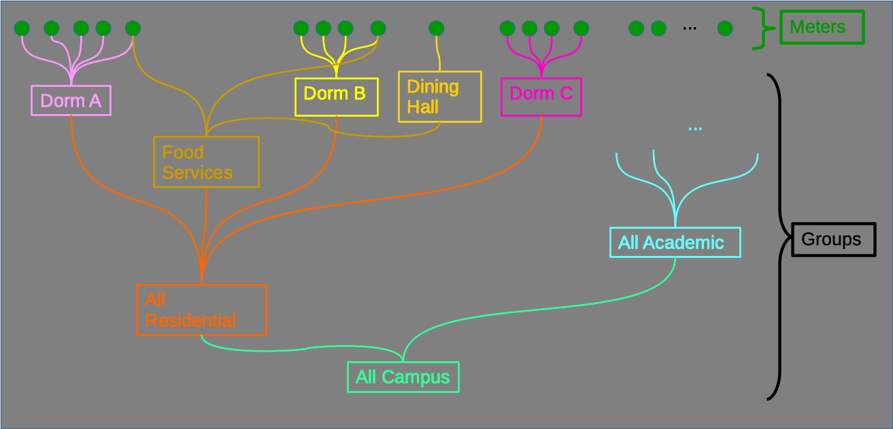
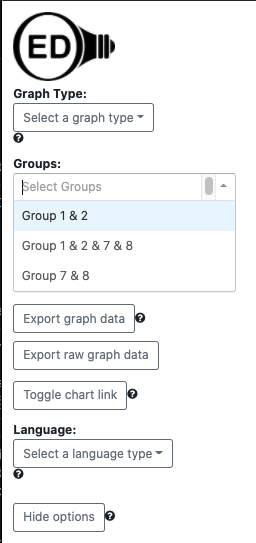
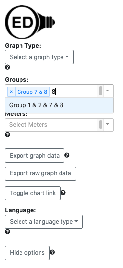

OED Documentation
Groups
Version V0.8.0
The latest version of this page is V1.0.0.
Documentation overview
User documentation
Information
Meters/Groups
Other Features
Admin documentation
Documentation versions for this page
Overview
A group in OED represents the aggregation (sum) of the meters and groups it represents. The following figure visually represents the ideas of a group in OED. It is a simplified representation of a college campus. 
The green circles at the top represent meters and the rectangles represent groups. The lines indicate what items are included in a given group. Here is a description of some of the groups:
- The group "Dorm A" (in pink) is the sum of the five meters with lines going into the box around its name. It logically represents the total energy usage for this dorm. Groups "Dorm B" (yellow) and "Dorm C" (dark pink) are similar but each have four meters in the group that form them. This shows you can have any number of meters within a group.
- The group "Dining Hall" (orange) has only one meter in it so its values are equivalent to that meter. Here the energy usage is represented by a single meter.
- The group "Food Services" (yellow-orange) is the sum of three meters. Two of those meters come from directly including them into the group: One that is part of "Dorm A" and one that is part of "Dorm B". This shows that meters can be part of multiple groups. The final meter comes from including the "Dining Hall" (orange) group. This shows that a group can include a mix of meters and groups.
- The group "All Residential" (red) is the sum of the groups "Dorm A", "Food Services", "Dorm B" and "Dorm C". This logically represents the total energy usage for the residential parts of the campus. This shows that groups can be formed as the sum of other groups. OED will automatically include all the meters in the groups you include and aggregate them together. In this case it will be the sum of the 14 meters that have direct lines coming out of them. Note OED will not double count the meters included in the "Food Services" group that are also in groups "Dorm A" and Dorm B". A meter is only counted once even if it appears to be included multiple times.
- The group "All Academic" (light blue) is the sum of an unspecified number of meters and groups. It represents the energy usage on the academic (labs, classroom, etc.) part of campus.
- The group "All Campus" (light green) is the sum of the groups "All Residential" and "All Academic". It again includes meters from other groups and again shows that any level of hierarchy of meters and groups is allowed.
The important idea behind groups is they allow a site to create arbitrary combinations that can represent the total usage of energy for an area of an organization. As OED rolls out inclusion of all resource types (coming future release), groups will allow for combining different types of energy usage to get the total energy usage across groups. For example, a building might have a meter for electricity, a meter for natural gas and a meter for steam. A group that combined these meters would represent the total energy used across these three energy sources.
Usage
Each graphic page has a dropdown menu for the available groups as shown in this figure: 
Note if the list of groups is long, you may need to scroll down to get to the one you want. You can do an incremental search for any group by typing in the input area at the top of the dropdown menu to limit the groups shown to the ones that match what you type. The search will occur anywhere in the group name (not just the start) and is not case sensitive. This can still be done when groups are already selected and shown at the top of the group dropdown. This is shown in the next figure where Group 7 & 8 was already selected and "8" was typed in the dropdown to find Group 1 & 2 & 7 & 8 (excluded Group 1 & 2 in this case). 
You can select any group by clicking on it so it shows up on the graphic on this page and appear in the list at the top of the group dropdown. The choice of groups will remain as you change the graphic you are displaying.
If you want to remove a group from being graphed, you click the "x" to the left of its name in the list at the top of the dropdown menu.
Details
The hope is that the name of a group gives you a good idea of what it represents. However, you may want to see the underlying groups and meters within a group. The Group Content page can show this.